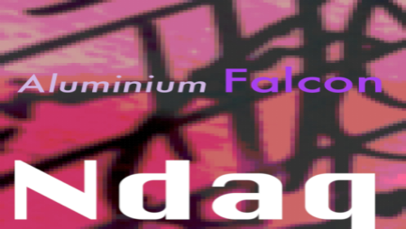

24/03/19
"First Signed Release - Aluminium Falcon"
What many of you may already know is that in my spare time I like to produce music.
You may know have heard of my alias 'NDAQ'.
In my native tongue, 'Indak' means to move in time with rhythm hence the name.
My sound tends to lean on electronic and experimental but with clear rhythmic influences.
This is my first officially released single.
Check it out online here!